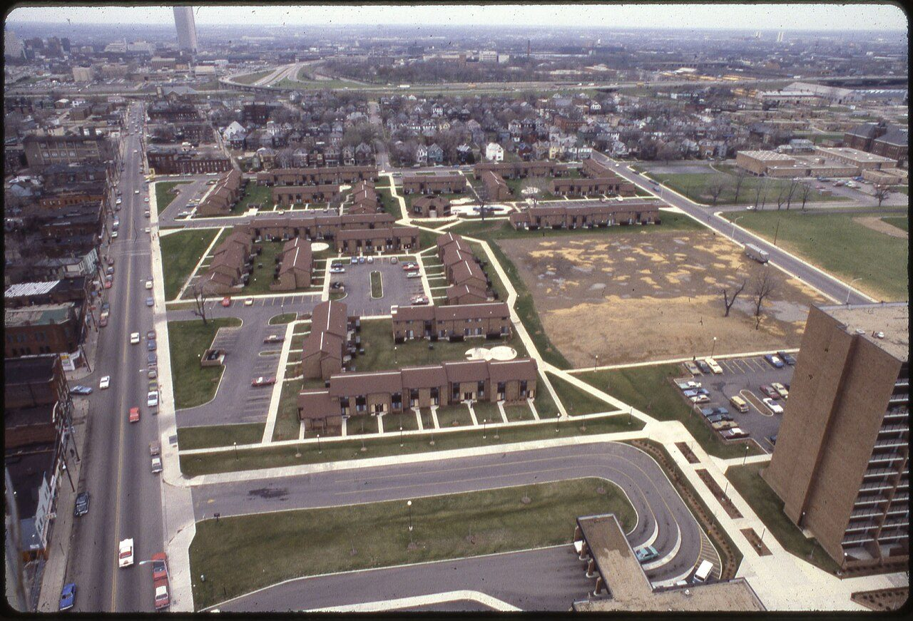
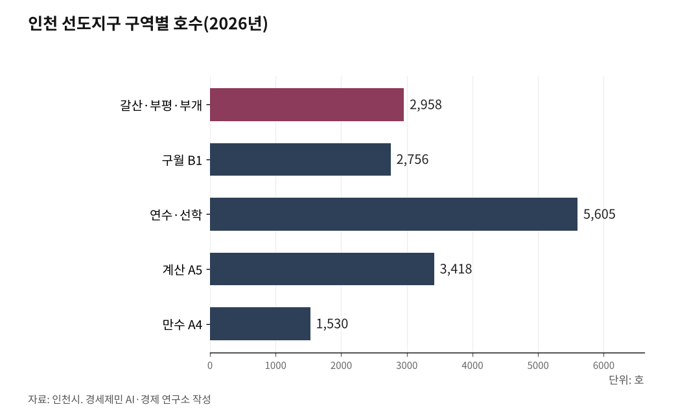

노후계획도시 선도지구, 분담금은 용적률 두 구간에서 갈린다
구월 B1구역은 중심지구정비형 기준용적률 430%, 다섯 지구 가운데 가장 높다
기준용적률까지는 공공기여 10%, 넘는 몫은 41%를 더 낸다. 싼 구간이 길수록 주민 부담이 준다
8월 4일 시행 법 개정으로 단지 한 곳만 과반 못 넘겨도 사업 멈춘다
인천시가 2026년 8월 25일 노후계획도시 정비 선도지구 여섯 구역 1만6267호를 확정했다. 구월지구 B1구역이 2756호로 그 안에 들었다. 동의율 87.5%, 평가점수 88.2점이다.

선정은 출발선이다. 주민이 실제로 치르게 될 값은 아직 정해지지 않았다. 그 값이 어디서 갈리는지를 공개된 수치로 짚는다.
1. 여섯 구역을 나란히 놓는다
구역별 호수와 동의율과 평가점수는 이렇다.
갈산·부평·부개 A3구역 2958호, 동의율 87.8%, 평가점수 91.9점.
구월 B1구역 2756호, 87.5%, 88.2점.
연수·선학 A7·A12구역 5605호(A7 4748호, A12 857호), 90.3%, 87.4점(평균값).
계산 A5구역 3418호, 73.8%, 70.5점.
만수1·2·3 A4구역 1530호, 63.5%, 56.6점.
구월 B1구역은 평가점수가 둘째, 동의율이 셋째다. 상위권에서 붙었다. 동의율은 사업 속도를 가르는 첫째 변수다.
눈에 걸리는 것은 만수 A4구역이다. 동의율 63.5%, 평가점수 56.6점으로 선도지구에 들었다. B1구역보다 30점 넘게 낮다. 인천시는 그 사유를 밝히지 않았다. 점수가 낮은 구역이 뒤에서 삐걱대면 한정된 행정 인력이 그쪽으로 쏠린다. 다른 구역 주민에게도 남의 일이 아니다.

2. 1만6267호는 공급 물량이 아니다
여러 매체가 1만6267호를 공급으로 적었다. 그러나 같은 기사에 신청 물량이 4만6100호로 적혀 있다. 신청은 이미 살고 있는 집을 세어 낸 것이다. 그러므로 1만6267호도 기존 세대수다.
B1구역 2756호 역시 헐기 전 일곱 단지 세대수의 합이다. 새로 지을 집 수가 아니다. 새로 지을 집은 이보다 훨씬 많다. 용적률이 올라가기 때문이고, 늘어난 몫에서 일반분양을 빼 공사비를 대는 구조다.
이 구분이 흐려지면 사업성을 잘못 읽는다. 기사를 그대로 믿고 2756가구를 공급한다고 이해하면 분담금 계산이 통째로 어긋난다.
3. 구월지구 용적률이 가장 높다 — 408.4%와 430%는 층이 다른 수치다
인천시 2035 노후계획도시정비 기본계획이 정한 지구별 기준용적률은 이렇다.
구월 408.4%. 만수1·2·3 322.2%. 연수·선학 287.3%(현황 142.3%). 계산과 갈산·부평·부개는 확인하지 못했다.
구월지구 408.4%는 확인된 셋 가운데 가장 높다. 연수·선학보다 121.1%포인트 높다. 까닭은 입지다. 구월지구는 인천시청과 인천터미널역 축에 걸쳐 있는 중심지다.
그런데 408.4%는 지구 전체를 대표하는 값이다. 구월지구 안에서 기준용적률은 정비 유형에 따라 다시 갈린다. 주택단지정비형은 310%, 중심지구정비형은 430%다. B1구역은 중심지구정비형이다. 그러므로 B1구역에 적용되는 기준용적률은 430%다.
★ 보도마다 408.4%와 430%가 섞여 나오는 까닭이 여기 있다. 틀린 수치가 아니라 층이 다른 수치다. 지구 단위로 말하면 408.4%, B1구역 단위로 말하면 430%다. 주민이 자기 분담금을 셀 때 쓸 값은 430%다.
여기에 노후계획도시 특별법 특례가 붙는다. 용적률을 현행 도시계획 기준의 최대 1.5배까지 푼다. 안전진단도 완화된다.
4. 분담금이 정해지는 구조 — 두 구간이 갈린다
인천 다섯 지구는 공공기여율이 같다. 두 구간으로 나뉜다.
기준용적률까지 올리는 몫은 공공기여 10%다. 기준용적률을 넘어 더 올리는 몫은 10%에 초과분의 41%를 더해 낸다.
읽는 법은 이렇다. 현황에서 기준용적률까지 올리는 몫은 열에 하나만 내놓으면 된다. 값이 싸다. 기준용적률을 넘어 더 올리는 몫은 넷 가까이 내놓아야 한다. 값이 비싸다.
인천시는 이 비율을 법이 정한 최저 수준으로 잡았다. 주민에게 유리한 결정이다.
B1구역은 기준용적률 자체가 430%로 높다. 곧 싼 구간이 길다. 이것이 다른 구역과 갈리는 실질적 차이다.
구월지구 공공기여금 총액은 1453억원으로 잡혔다. 이 가운데 현물대납이 235억원이고, 남는 1218억원이 기반시설 확충에 쓰인다. B1구역에서는 도시기능을 높이기 위한 상업·업무공간 2500제곱미터를 기부채납으로 받고, 역세권 복합거점과 중앙공원을 잇는 입체보행교에 70억원을 배정했다. B1구역 면적은 14만3839제곱미터다.
다만 계산을 끝내려면 현황용적률을 알아야 한다. B1구역 일곱 단지의 현황용적률은 확인하지 못했다. 1991년 준공 아파트는 통상 180%에서 220% 사이이나 이것은 일반론이고 개별 단지 실제 값이 아니다. 짐작으로 계산하지 않는다.
주민이 자기 단지 값을 확인하는 길은 둘이다. 현황용적률과 연면적은 구청 건축물대장에, 대지지분은 등기부등본에 있다. 이 둘이 분담금 계산의 출발점이다.
5. 8월 4일 법 개정이 판을 바꿨다
사업시행자를 지정하려면 토지등소유자 전체 과반수 동의만으로 부족해졌다. 주택단지별 구분소유자 과반수 동의를 따로 받아야 한다.
B1구역에는 동아, 삼환1차, 관교쌍용, 풍림, 성지, 삼환관교2단지, 동부 일곱 단지가 들어간다. 일곱 가운데 한 곳이라도 과반을 못 넘기면 사업이 멈춘다.
뒤집어 보면 작은 단지가 큰 단지에 끌려가지 않는다는 뜻이다. 단지마다 거부권을 쥔다. 그 대신 어느 한 곳이 버티면 전체가 함께 멈춘다. 단지 사이 조정이 사업의 성패를 가르는 까닭이 여기에 있다.
권리산정 기준일은 8월 25일자로 고시됐다. 이 날 뒤로 지분을 쪼개 산 사람은 새 아파트를 받지 못한다. 기존 소유자를 보호하는 조치다.
6. 앞으로 밟을 절차와 걸리는 시간
단계는 여섯이다. 주민대표단 구성, 사업 방식 결정, 특별정비계획 수립, 사업시행계획과 관리처분계획 수립, 원주민 이주, 착공이다.
첫 단계가 이미 움직였다. 인천시는 2026년 9월 18일 특별정비예정구역 주민대표단 구성 기준(안)을 내놓고 9월 30일까지 의견을 받았다. 기준(안)은 이렇다.
주민대표단은 특별법에 따라 구역별로 5명에서 25명으로 꾸린다. 단지 수에 따라 기본 배정이 달라진다. 2~3개 단지는 단지당 4명, 4~5개 단지는 단지당 3명, 6개 이상 단지는 단지당 2명이다. 남는 자리는 세대수와 대지면적을 합산한 비율로 더 배정한다. 상가 대표는 2명 이상을 따로 두기를 권고했다.
B1구역은 일곱 단지다. 6개 이상에 해당하므로 단지당 2명, 기본 14명이다. 여기에 세대수와 대지면적 비율로 남는 자리가 붙고 상가 대표 2명 이상이 더해진다. 일곱 단지가 모두 같은 수로 출발하고, 규모 차이는 잔여 배정에서만 반영되는 구조다. 작은 단지에 유리하다.
인천시는 구역별 전담 총괄계획가를 배치해 정비계획 수립 전 과정에 참여시키겠다고 밝혔다. 인원과 시기는 밝히지 않았다.
전체 기간을 인천일보와 한국아파트신문은 10년 안팎으로 잡았다. 2026년에 시작하면 2036년 안팎에 입주한다는 셈이다. 이것은 언론 추정치이고 인천시 공식 목표가 아니다.
두 번째 단계가 갈림길이다. 조합 직접 시행과 공공시행자(LH·iH)와 신탁업자 셋은 비용 구조와 속도와 주민 통제력이 다 다르다. 주민대표단이 결정한다. 여기서 정해진 것이 10년을 간다.
7. 위험 일곱
가. 단지 사이 이해충돌. 일곱 단지는 대지지분과 용적률과 입지가 다 다르다. 사업성이 단지마다 갈린다. 대지지분이 넓은 단지는 손해를 본다고 여기고 좁은 단지는 이득을 본다고 여긴다. 인천일보가 이 대목을 성패를 가르는 첫째 변수로 짚었다.
나. 행정 역량. 김우성 시의원(더불어민주당·연수구2)이 담당 인력이 2명에서 5명으로 늘었으나 여전히 모자라고 20명 수준으로 늘려야 한다고 지적했다. 여섯 구역 1만6267호를 5명이 맡으면 한 사람이 3253호를 본다. 총괄계획가를 몇 명 언제 보내는지는 아직 밝히지 않았다.
다. 분담금. 1기 신도시에서 분당 일부 단지 추가분담금이 최대 7억원까지 거론됐다는 보도가 있었다. 인천은 분양가가 분당보다 낮아 같은 공사비를 일반분양으로 메우기가 더 어렵다. 다만 B1구역은 기준용적률이 430%로 높아 이 불리함을 상당 부분 상쇄한다. 실제 값은 특별정비계획이 나와야 산출된다.
라. 이주. 1기 신도시에서 정부가 이주민 전용 단지를 공급하지 않기로 방침을 정했다는 보도가 있다. 인천시 이주 대책은 발표에 없다. B1구역 2756세대가 움직이면 미추홀구 임대차 시장이 흔들린다. 여기에 다른 다섯 구역 1만3511세대가 겹친다.
마. 공사비. 사업이 늦어지면 공사비가 오르고 오른 공사비는 분담금으로 돌아온다. 갈등이 길어질수록 손해가 커지는 구조다.
바. 정보 비대칭. 단지별 사업비와 예상 분담금을 주민이 견줘 볼 수 있게 공개해야 한다는 의견이 나왔다. 지금은 그런 자료가 없다. 조합 집행부나 업체가 쥔 정보와 주민이 아는 것 사이의 간격에서 갈등이 자란다.
사. 관리주체 문제도 있다. 한국아파트신문은 장기수선공사와 장기수선충당금 적립을 둘러싼 갈등 가능성을 짚었다. 재건축이 예정된 단지에서 장기수선충당금을 계속 쌓을 것인가를 두고 다툼이 인다. 관리주체가 이주 관리와 관리업무 종료를 미리 준비해야 한다는 지적이다.
8. 인천시에 물어야 할 넷
구월지구 B1구역 정비용적률을 얼마로 잡았는가. 총괄계획가를 언제 몇 명 보내는가. 이주 대책을 언제 내놓는가. 단지별 예상 분담금 자료를 주민에게 공개할 계획이 있는가.
9. 확인하지 못한 것
B1구역 일곱 단지 각각의 현황용적률과 세대당 대지지분. 일곱 단지 각각의 세대수와 준공연도. B1구역 정비용적률. 계산지구와 갈산·부평·부개지구 기준용적률. 만수1·2·3 A4구역이 56.6점으로 선정된 사유. 인천시 이주 대책. 특별정비계획 수립 착수 시점. 주민대표단 구성 기준(안)이 9월 30일 의견 수렴 뒤 어떻게 확정됐는지. 인천시 원 보도자료 전문.
10. 보도에 걸리는 것
인천일보가 구월지구 B1구역을 2755호로 적었다. 인천투데이는 2756호다. 여섯 구역을 더하면 2756이라야 1만6267이 나온다. 한국아파트신문도 2756호로 적었다. 인천일보가 한 호 틀렸다.
여러 매체가 1만6267호를 공급으로 적었다. 2절에 적은 대로 이것은 기존 세대수다.
전국 최대라는 표현은 다른 시도 선정 물량이 함께 있어야 서는 주장인데 근거가 없다. 인천일보는 단일 지방정부 기준 역대 최대로 좁혀 적었다. 이쪽이 정확하다.
기준용적률을 408.4%로 적은 보도와 430%로 적은 보도가 섞여 있다. 3절에 적은 대로 둘은 층이 다른 수치다. 어느 쪽도 틀리지 않았으나 지구 값과 구역 값을 구별해 적지 않으면 주민이 자기 분담금을 잘못 센다.
참고문헌
이종선·인투아이, 인천 노후계획도시 선도지구 6곳 1만6267호 선정 전국 최대, 인천투데이, 2026년 8월 25일.
이종선·인투아이, [노후계획도시-구월] 문화예술도시로 재탄생 복합 정주단지 탈바꿈, 인천투데이, 2026년 2월 8일.
변성원, 인천 노후계획도시 선도지구 6개 구역 확정 단일 지자체 최대 물량, 인천일보, 2026년 8월 25일 1면.
변성원, 단지별 갈등 조정 인천형 노후계획도시 성패 가른다, 인천일보, 2026년 8월 25일 3면.
인천 노후계획도시정비 선도지구 출범⋯관리주체도 대비, 한국아파트신문, 2026년 9월 1일.
인천시 노후계획도시 특별정비예정구역 주민대표단 구성 기준(안) 제시, 인천in, 2026년 9월 18일.
인천시, 2035 노후계획도시정비기본계획(안), 2025년 12월 2일.
1기 신도시 선도지구 결국은 분담금이다, 헤럴드경제, 2024년 11월 28일.
노후계획도시 정비 및 지원에 관한 특별법 제39조 및 사업시행자 지정 요건 개정분, 2026년 8월 4일 시행.
사진 출처
· [대표사진] David E. Lucas, "Mount Vernon Plaza redevelopment site - DPLA - 47e4cea6ac1da9459c2866242dd1cc74.jpg", 위키미디어 공용, 퍼블릭 도메인, https://commons.wikimedia.org/wiki/File:Mount_Vernon_Plaza_redevelopment_site_-_DPLA_-_47e4cea6ac1da9459c2866242dd1cc74.jpg
※ 이 브리핑은 인공지능을 활용해 작성했습니다.
관련기사
- 구월지구 B1구역, 인천에서 가장 높은 용적률 430% 받았다
- 구월지구 B1구역 선도지구 선정 심층 분석
- [주식공부] 코스피 12.13% 하락, 자사주 끊긴 자리에 선 개인
- [철도] KTX-1 46편성 수명 2033년, 발주 시한은 2027년
저작권자 © AI경세제민 무단전재 및 재배포, AI학습 및 활용 금지